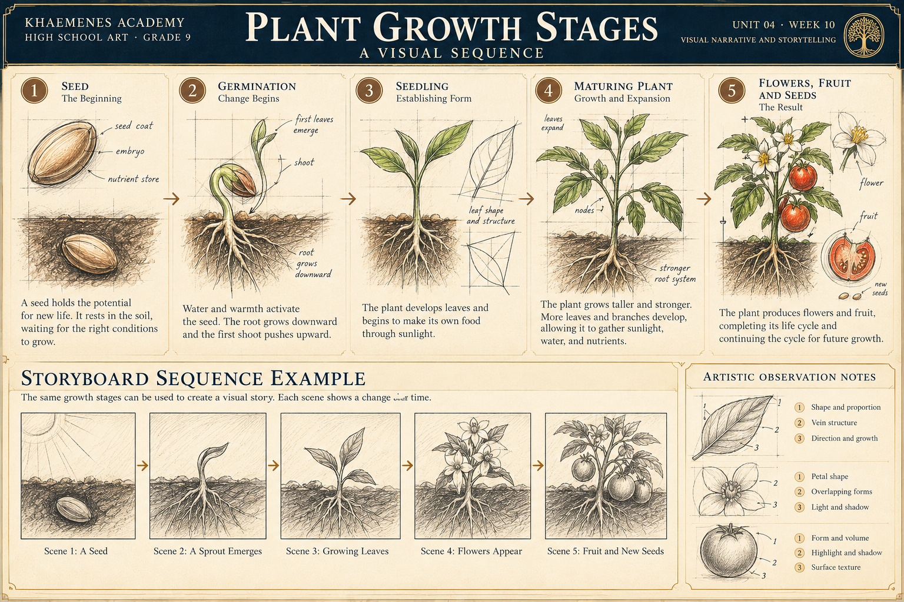
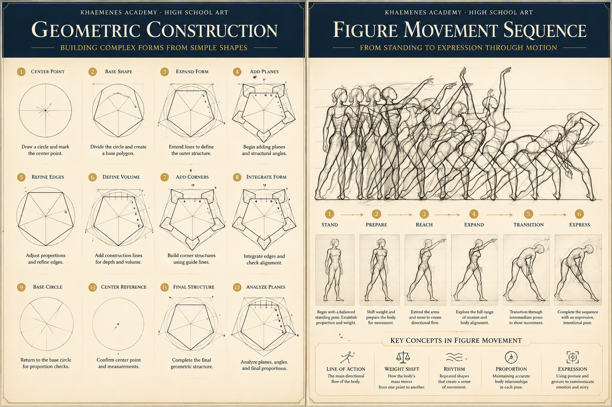

Sequence
Arrange events so viewers can infer what happened before, during, and after a turning point.
KHAEMENES ACADEMY · BAZAAR ART · ART 101
Unit 04 · Composition and Visual Storytelling
How do artists tell a story through arrangement, viewpoint, sequence, and symbolism while respecting the people and histories they represent?
By the end of the week, create a three-panel original visual story, document research, test the reading sequence, revise one panel, and present an artist statement supported by evidence.
Arrange events so viewers can infer what happened before, during, and after a turning point.
Choose distance, angle, framing, and whose experience the viewer is invited to consider.
Objects, colors, and gestures may carry meaning, but interpretations depend on culture and evidence.
Visual hierarchy ties these choices together: contrast, scale, and directional lines help the viewer notice what matters in each frame.
Follow the five stages from seed to flowering and fruit. Study how observational sketching, contour, proportion, overlap, and changes in scale communicate the passage of time. Then examine the storyboard row to see how a botanical study becomes a visual narrative.

Draw three small observational studies: a seed, a sprout, and a mature plant. Keep the ground line consistent, then vary size, overlap, and leaf direction to show development. Next, make a second three-panel version that changes the viewpoint or emphasis. Ask a viewer which version communicates the sequence more clearly and record their evidence.
Choose a documented visual story, such as an illustrated manuscript, sequential artwork, comic, or narrative painting. Record artist or maker (if known), title, date or period, medium, source and access date. Identify which details suggest an event, a relationship, or a passage of time. Distinguish observation from interpretation.
Imagine a child discovering a lost object. From a wide view, the setting may become the emphasis; a close view may emphasize the hand and object; a view from behind may withhold facial expression. Sketch each framing. Explain what information is gained and lost, and why none of these choices proves what the character feels.
Study the plant-growth panels for changes across time and the figure-movement panels for gesture and weight shift. Rearrange three hand-drawn thumbnail scenes on paper, ask someone to describe what happened without your explanation, and record where the sequence becomes unclear.
Write a one-sentence premise for an original, age-appropriate story. Plan three frames: setup, turning point, and consequence. Make two thumbnail sequences with different viewpoints or ordering. Develop the stronger sequence using drawing, painting, collage or digital media. Revise at least one panel in response to viewer feedback. If depicting a real culture, community, or historical event, consult credited sources and avoid presenting imagined details as verified facts.
Save the research citation, premise, both thumbnail alternatives, first full draft, revised sequence, peer/guardian feedback and a 120–200 word artist statement. Explain how contrast, framing and sequence support your intention and note one limitation.
Use this visual study to connect precise geometric construction with expressive gesture. The left panel develops complex forms from circles, guide lines, and planes; the right panel studies figure movement through successive poses, weight shifts, and lines of action.

Choose three poses from the movement sequence. First draw the line of action, then mark the head, ribcage, pelvis, and supporting leg. Sketch a simple geometric object that appears in all three scenes. Arrange the drawings as a visual narrative with a clear beginning, change, and result. Record what remains consistent and what changes.
Records save in this browser only. Do not treat local storage as authenticated learner identity or an Academy-authorized mastery result.
Research and contextual responsibility (20) · Two planned narrative alternatives (20) · Original studio sequence and visual clarity (25) · Revision and feedback (20) · Portfolio evidence and artist statement (15). An educator evaluates this rubric separately from the formative quiz.
Five questions are selected from fifteen curriculum-aligned items; at least four correct answers meet the formative practice threshold. Submitted answers lock. This result is browser-local and does not independently unlock the next lesson.
Preserve your Week 10 portfolio record before advancing. The next unit will extend these skills into further studio work.
Return to Unit 04 overview